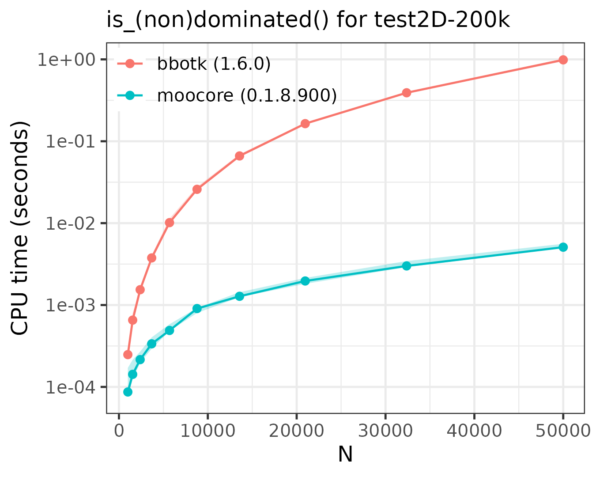
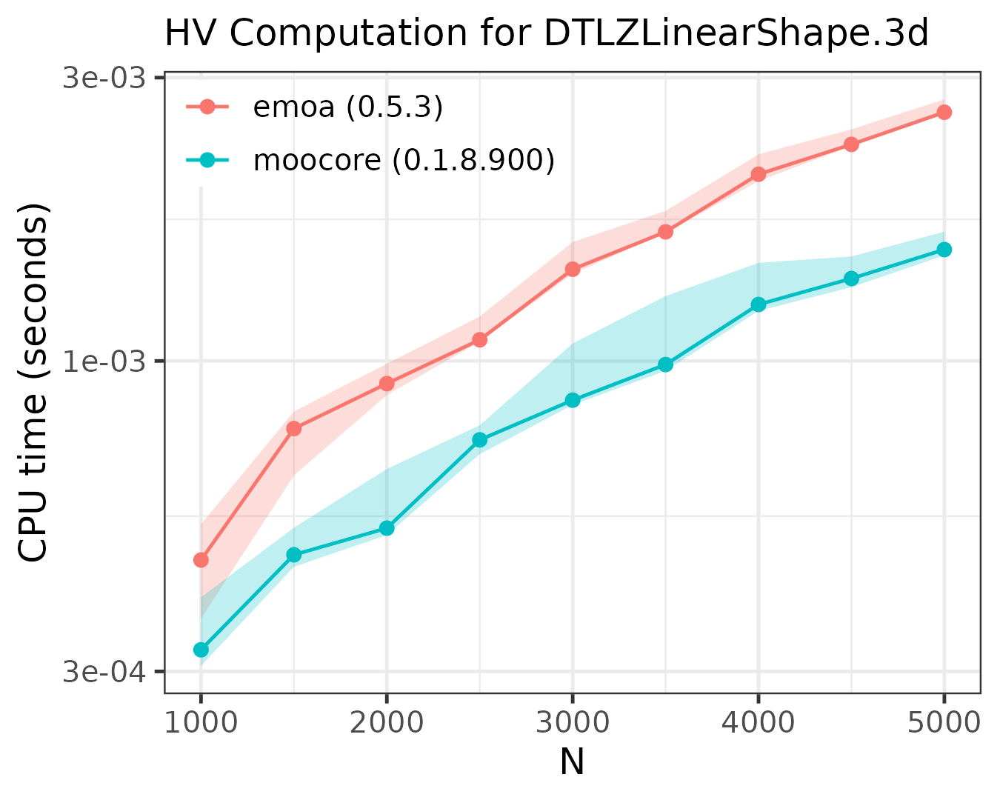
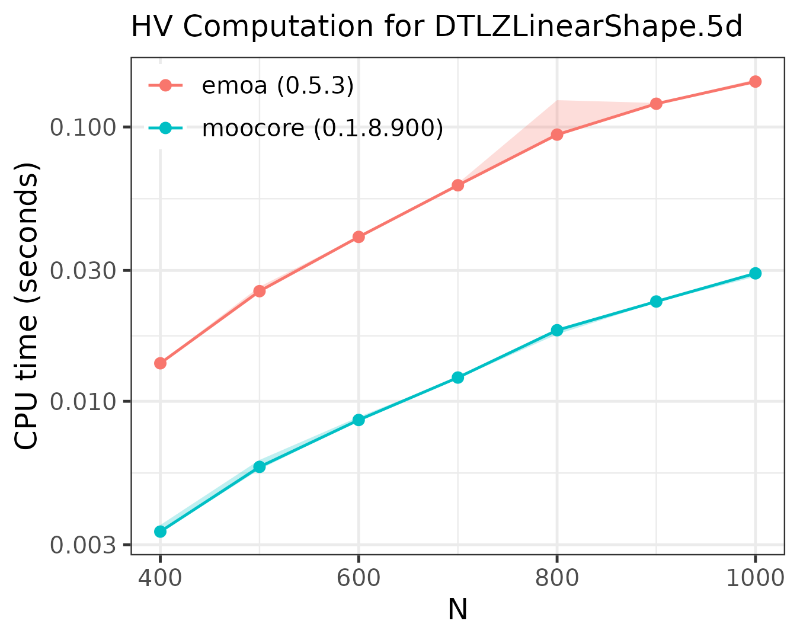
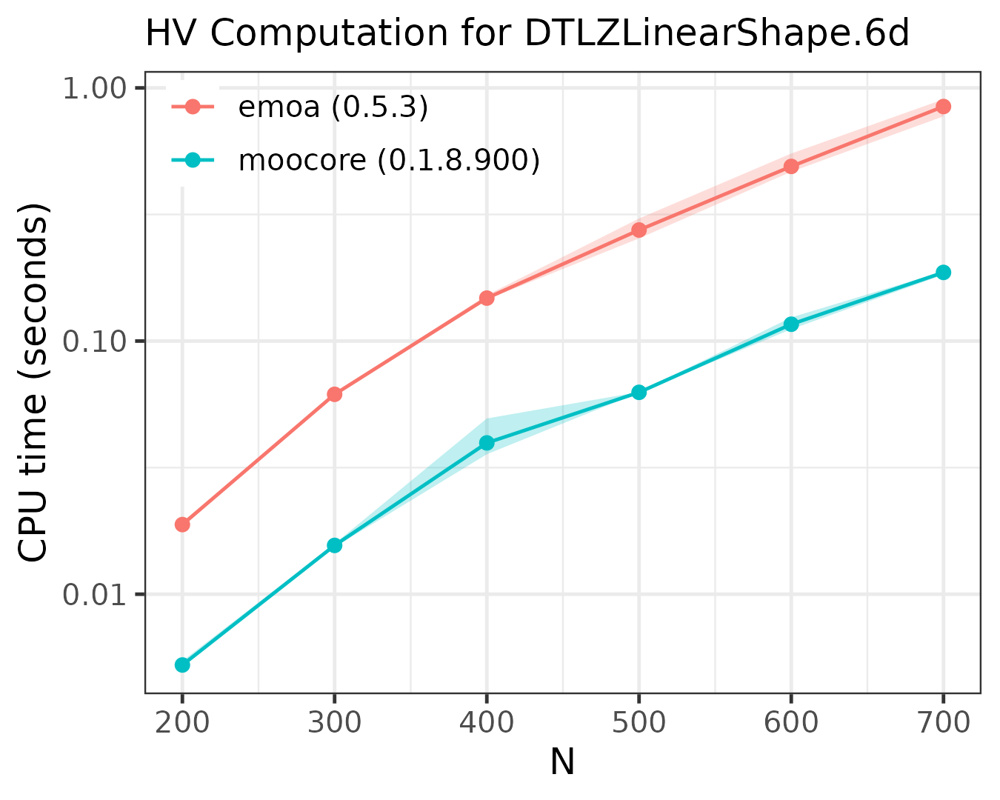
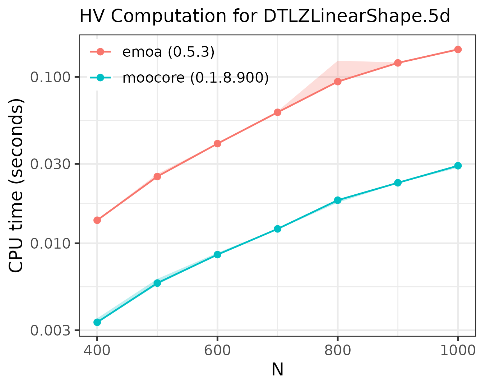
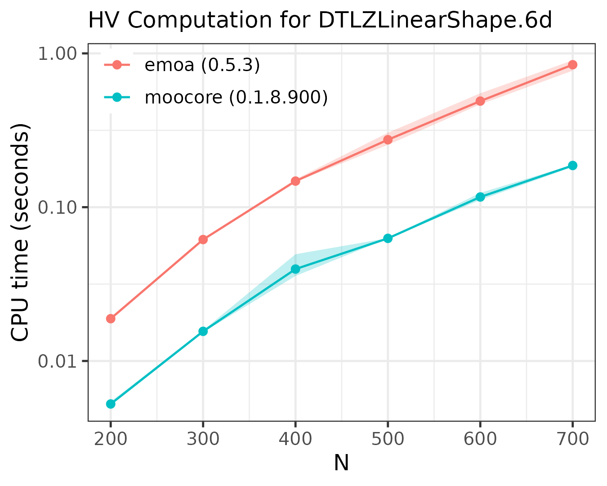

The following plots compare the performance of moocore
against emoa and
bbotk.
Other R packages are not included in the comparison because they are
based on these packages for the functionality benchmarked, so they are
at least as slow as them. For example GPareto,
mlr3mbo,
rmoo
and bbotk
use emoa to
compute the hypervolume. Not all packages provide the same
functionality.
Show benchmarking setup code
library(matrixStats)
library(data.table)
library(ggplot2)
library(moocore)
geomspace <- function(start, stop, num)
round(exp(seq(log(start), log(stop), length.out = num)), 0)
get_dataset <- function(filename, filter=FALSE) {
cat("Get file '", filename, "'\n")
destfile <- system.file(file.path("extdata", filename), package="moocore")
if (destfile == "") {
destfile <- file.path("../../../testsuite/data", filename)
if (!file.exists(destfile)) {
fileext <- if (endsWith(destfile, ".xz")) ".xz" else ""
destfile <- withr::local_tempfile(fileext = fileext)
base_url <- "https://github.com/multi-objective/testsuite/raw/refs/heads/main/data/"
utils::download.file(paste0(base_url, filename), destfile, quiet = FALSE)
}
}
x <- read_datasets(destfile)
x <- x[, -ncol(x)] # Union of datasets
if (filter)
x <- filter_dominated(x)
x
}
# This is adapted from atime:::plot.atime
benchmark_plot <- function (x, title = "", only_seconds=TRUE, ...) {
expr.name <- N <- kilobytes <- NULL
meas <- x[["measurements"]]
by.dt <- meas[, x$by.vec, with = FALSE]
tall.list <- list()
for (unit.i in seq_along(x$unit.col.vec)) {
col.name <- x$unit.col.vec[[unit.i]]
unit <- names(x$unit.col.vec)[[unit.i]]
if (is.null(unit) || unit == "")
unit <- col.name
tall.list[[unit.i]] <- meas[, data.table(N, by.dt,
unit, median = get(col.name))]
}
tall <- rbindlist(tall.list)
if (only_seconds) {
tall <- tall[unit=="seconds", ]
ylab <- "CPU time (seconds)"
legend.position <- c(0.25, 0.9)
} else {
ylab <- "median line, min/max band"
legend.position <- c(0.8, 0.625)
}
gg <- ggplot() + theme_bw(base_size=12) +
geom_ribbon(aes(N, ymin = min, ymax = max, fill = expr.name),
data = data.table(meas, unit = "seconds"), alpha = 0.25, show.legend=FALSE) +
geom_line(aes(N, median, color = expr.name), data = tall) +
geom_point(aes(N, median, color = expr.name), data = tall) +
scale_y_log10(ylab) +
labs(subtitle = title) +
theme(legend.title = element_blank(), legend.position = legend.position,
legend.background = element_rect(fill="transparent"))
if (!only_seconds)
gg <- gg + facet_grid(unit ~ ., scales = "free")
gg
}
get_package_version <- function(package)
paste0(package, " (", as.character(packageVersion(package)), ")")
benchmark <- function(name, x, N, setup, expr.list, prefix, title) {
rds_file <- paste0("bench/bench-", prefix, "-", name, ".rds")
if (run_benchmarks || !file.exists(rds_file)) {
lapply(names(expr.list), library, character.only = TRUE)
names(expr.list) <- sapply(names(expr.list), get_package_version, USE.NAMES=FALSE)
res <- substitute(atime::atime(
N = N,
expr.list = expr.list,
setup = SETUP,
result=FALSE,
times=5,
seconds.limit=10), list(SETUP=setup))
res <- eval(res)
saveRDS(res, file = rds_file)
} else {
res <- readRDS(rds_file)
}
gg <- benchmark_plot(res, title = paste0(title, " for ", name))
gg
}Identifying (non)dominated points
The following plots compare the speed of finding (non)dominated
solutions, equivalent to moocore::is_nondominated(), in 2D,
3D, 4D and 10D. The plots show that moocore
is always faster than bbotk.
setup <- quote({
stopifnot(nrow(x) >= N)
z <- x[1:N, ]
tz <- t(z)
})
expr.list <- list(
moocore = quote(moocore::is_nondominated(z)),
bbotk = quote(bbotk::is_dominated(tz)))
files <- list(
"test2D-200k"=list(dataset="test2D-200k.inp.xz", N=geomspace(1000, 50000, 10)),
"ran3d-40k"=list(dataset="ran.40000pts.3d.1.xz", N=geomspace(1000, 40000, 10)),
"ran4d"=list(dataset="ran.9000pts.4d.10.xz", N=geomspace(1000, 30000, 10)),
"rmnk-10d"=list(dataset="rmnk_0.0_10_16_1_0_random_search_1.txt.xz", N=geomspace(1000, 20000, 10))
)
for (name in names(files)) {
p <- benchmark(name = name, x = get_dataset(files[[name]]$dataset, filter=FALSE),
N = files[[name]]$N, prefix="ndom", title = "is_(non)dominated()",
setup = setup, expr.list = expr.list)
print(p)
}


Exact computation of hypervolume
The following plots compare the speed of computing the hypervolume indicator in 3D, 4D, 5D and 6D.
setup <- quote({
ref <- colMaxs(x, useNames = FALSE) + 1
stopifnot(nrow(x) >= N)
z <- x[1:N, ]
tz <- t(z)
})
expr.list <- list(
moocore = quote(moocore::hypervolume(z, ref = ref)),
emoa = quote(emoa::dominated_hypervolume(tz, ref = ref)))
files <- list(
"DTLZLinearShape.3d"=list(
dataset = "DTLZLinearShape.3d.front.1000pts.10",
N = seq(1000, 6000, 1000)),
"DTLZLinearShape.4d"=list(
dataset = "DTLZLinearShape.4d.front.1000pts.10",
N = seq(700, 1500, 100)),
"DTLZLinearShape.5d"=list(
dataset = "DTLZLinearShape.5d.front.500pts.10",
N = seq(400, 1000, 100)),
"DTLZLinearShape.6d"=list(
dataset = "DTLZLinearShape.6d.front.700pts.10.xz",
N = seq(200, 700, 100))
)
for (name in names(files)) {
p <- benchmark(name = name, x = get_dataset(files[[name]]$dataset, filter=TRUE),
N = files[[name]]$N, prefix="hv", title = "HV Computation",
setup = setup, expr.list = expr.list)
print(p)
} 

As the plots show, moocore
is always faster than emoa
and, hence, faster than GPareto,
mlr3mbo,
rmoo
and bbotk.
Hypervolume contribution
The only R package, other than moocore,
able to compute hypervolume contributions
moocore::hv_contributions() is emoa.
However, emoa is
buggy and calculates wrong values (olafmersmann/emoa#1).